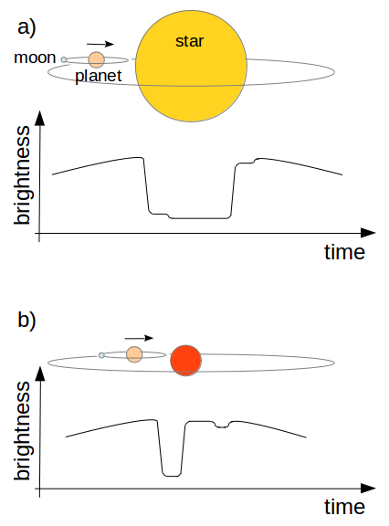

<!DOCTYPE html PUBLIC "-//W3C//DTD XHTML 1.1 Strict//EN" "http://www.w3.org/TR/xhtml1/DTD/xhtml1-strict.dtd">
<html xmlns="http://www.w3.org/1999/xhtml" lang="en" xml:lang="en">
<head>
	<meta http-equiv="content-type" content="text/html; charset=utf-8" />
	<meta name="description" content="Your description goes here" />
	<meta name="keywords" content="your,keywords,goes,here" />
	<meta name="author" content="Your Name" />
	<link href='http://fonts.googleapis.com/css?family=Dosis' rel='stylesheet' type='text/css' />
	<link rel="stylesheet" type="text/css" href="origo.css" title="Origo" media="all" />
	<title>SPEX - Research</title>
</head>

<body class="light blue smaller freestyle01">
<div id="layout">

	<div class="row smaller">
		<div class="col c5 smaller">
			<h1><a href="index.html">RESEARCH</a></h1>
		</div>

		<div class="col c7 aligncenter">
			<p class="slogan">MTA CSFK Lendület Near-Field Cosmology Research Group</p>
		</div>

		<div class="col c12 alignright">
			<p><a href="hu/research_hu.html"></img></a>
			   <a href="research_en.html"></img></a></p>
		</div>
	</div>

	<div class="row">
		<div class="col c12 aligncenter">
			
		</div>
	</div>

	<div class="row">
		<div class="col c2 alignleft">
			<ul class="menu">
				<li><a href="index.html">About Lendület</a></li>
				<li><a href="TESS_en.html">About TESS</a></li>
				<li><a href="kepler_en.html">About Kepler</a></li>
				<li><a href="members_en.html">Lendület members</a></li>
				<li><a class="current" href="research_en.html">Research</a></li>
				<li><a href="grants_en.html">Grants</a></li>
				<li><a href="publications_en.html">Publications</a></li>
				<li><a href="data_en.html">Downloadable light curves</a></li>
				<li><a href="media_en.html">In the media</a></li>
				<li><a href="students_en.html">For students</a></li>
				<li><a href="conferences_en.html">Conferences</a></li>
				<li><a href="contact_en.html">Contact</a></li>
				<li><a href="links_en.html">Links</a></li>
			</ul>
		</div>

		<div class="col c10">
			<h2>Physical properties of galactic RV Tauri stars from Gaia DR2 data</h2>
			<br>
			<p>We present the first period-luminosity and period-radius relation of Galactic RV Tauri variable stars. We have surveyed the literature for all variable stars belonging to this class and compiled the full set of their photometric and spectroscopic measurements. We cross-matched the final list of stars with the Gaia DR2 database and took the parallaxes, G-band magnitudes and effective temperatures to calculate the distances, luminosities and radii using a probabilistic approach. As it turned out, the sample was very contaminated and thus we restricted our study to those objects for which the RV Tau-nature was securely confirmed. We found that several stars are located outside the red edge of the classical instability strip, which implies a wider pulsational region for RV Tau stars. The period-luminosity relation of galactic RV Tauri stars is steeper than that of the shorter-period Type II Cepheids, in agreement with previous result obtained for the Magellanic Clouds and globular clusters. The median masses of RVa and RVb stars were calculated to be 0.45-0.52 Ms and 0.83 Ms, respectively.
			<br>
			<a href="https://arxiv.org/pdf/1901.01409.pdf" target="new">Bódi, Kiss, 2019, ApJ</a>
			<!--<center><a href="images/GM_transit_en.png" target="_blank"></a><br>
			<i>The occultation light curves of the planet and the moon overlap in the case of Solar-like stars (panel `a'), but for red dwarfs, because of the smaller stellar size, the occultations are separated in most cases (panel `b').</i></center><br> -->

		        <br><hr><br>

		        <h2>Chaotic dynamics in the pulsation of DF Cygni, as observed by Kepler</h2>
		        <br>
		        <p>Pulsations of RV Tauri-type variable stars can be governed by chaotic dynamics. However, observational evidence for this happening is usually hard to come by. Here we use the continuous, 4-yr-long observations of the Kepler space telescope to search for the signs of chaos in the RVb-type pulsating supergiant, DF Cygni. We use the Global Flow Reconstruction method to estimate the quantitative properties of the dynamics driving the pulsations of the star. The secondary, long-term light variation, i.e. the RVb phenomenon, was removed in the analysis with the empirical mode decomposition method. Our analysis revealed that the pulsation of DF Cyg could be described as a chaotic signal with a Lyapunov dimension of ~2.8. DF Cyg is only the third RV Tau star, and the first of the RVb subtype, where the non-linear analysis indicates that low-dimensional chaos may explain the peculiarities of the pulsation.
                        <br>
                        <a href="https://academic.oup.com/mnras/article-abstract/481/3/2986/5097888?redirectedFrom=PDF">Plachy, Bódi, Kolláth, 2018, MNRAS, 481, 2986</a>
                        <br>


			<br><hr><br>

		</div>
	</div>

	<div id="footer" class="row">
		<div class="col c12 aligncenter">
			<h3>&copy; 2019 R. Szabó, A. Bódi, P. Szabó</h3>
			<p><a href="http://andreasviklund.com/templates/origo/">Template design</a> by <a href="http://andreasviklund.com/">Andreas Viklund</a><br />
		</div>
	</div>
 </div>
</body>
</html>
